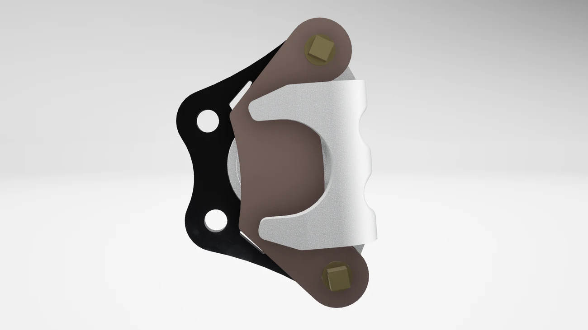

SR24 Brakes Design
Brake caliper, rotor, piston, slide pin, seal, and mounting design for the SR24 Baja SAE vehicle. The work reduced system mass, improved reliability, and correlated FEA to dyno and vehicle testing.

Requirements
The brakes package had to remain reliable through endurance while reducing mass, controlling caliper deflection, preserving thermal performance, and improving serviceability.
- MassReduce subsystem weight by at least 10% and improve unsprung-mass efficiency.
- DeflectionLimit caliper deflection at 2000 psi and validate with a dial indicator test.
- ThermalKeep rotor temperature under 250 F during endurance-style operation.
- Locking forceMaintain force-to-lock under 100 lb throughout runtime.
- ReliabilityComplete competition events without brake hardware removing the car from the race.
- ServiceImprove wrench access, caliper sliding, pad wear behavior, and manufacturability.
Project Cycle
SR24 brakes followed a year-long design cycle from requirements through design reviews, manufacturing, testing, competition, and future-change review.
Research and concept selection
Used Excel and Matlab brake calculations to size pressures, master cylinders, calipers, and rotors for full lock.
Design reviews and CAD
Optimized caliper body geometry, piston length, slide pin length, pad contact, rotor layout, and seal cross-section.
Manufacturing
CNC-machined calipers on the Haas VF-3, waterjet rotors and mounts, turned pistons and bushings, and iterated assembly fixes.
Testing and competition
Validated deflection, pressure, rotor temperature, brake drag, and driver performance before the first competition.
Selected Engineering Work
Design details from the SR24 brake caliper, rotor, and validation package.
Analysis and Manufacturing Details
The added Rocket Lab interview deck provided more precise documentation of load cases, contact assumptions, CNC sequencing, tooling, and issue resolution.
- Assembly simulationDistributed loads through slide pins, bushings, pads, mount ears, and caliper legs instead of relying only on isolated part loads.
- Boundary conditionsMount fixed at upright/bolt interfaces; virtual walls at pad faces 1/8 in apart; piston-side wall representing hydraulic input.
- Loads2000 psi applied inside the piston bore and on pad 1; 4200 lbf-in torque applied on pad faces.
- ToolpathsHSMWorks program used 7 tools, 25 toolpaths, and an estimated 41 min 16 sec cycle time.
- OperationsOp 1 piston-bore side roughing/finishing; Op 2 flipped 180 degrees for remaining geometry; Op 3 rotated 90 degrees to machine the slot.
- Process fixesCut thread reliefs, remachined bushings for press fit, improved tap setup, rinsed parts after coolant exposure, and planned better EPDM seal cutting.
Results
The design met or exceeded the core brake requirements and stayed reliable through competition.
- Total brake system mass dropped from 5.66 lb to 4.84 lb, a 14.43% reduction.
- Unsprung brake mass dropped from 3.82 lb to 3.34 lb, a 12.40% reduction.
- Piston mass dropped from 0.15 lb to 0.046 lb by switching from stainless steel to 6061 aluminum.
- Caliper deflection correlated to testing: 0.012 in predicted versus 0.011 in measured.
- Rotor temperature correlated to testing: 182 F predicted versus 160 F measured.
- Pressure to lock correlated to testing: 777.5 psi predicted versus 832 psi measured.
- Brakes were the first subsystem with all parts manufactured and assembled.
- Machined brake components had zero failures in competition and never pulled the vehicle out of a race.
- Stock costs were reduced by shrinking the part envelope and improving machining strategy.
- Competition results included 9th overall at Baja SAE California and 6th overall at both Williamsport and Michigan.